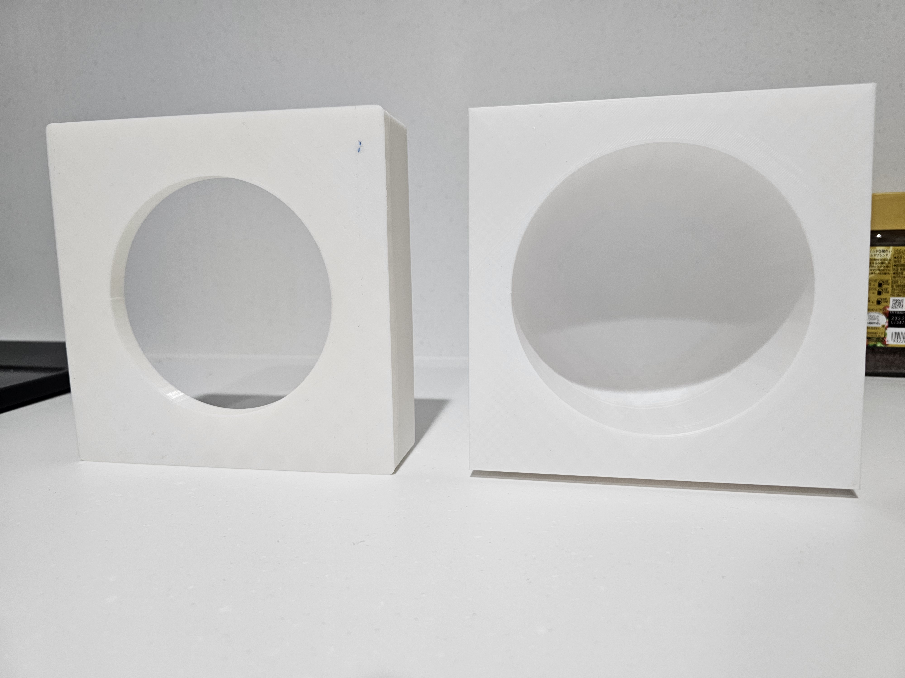

最終課題
物品名：温度保持プレート

制作理由：
普段からパソコンを使いながら食事をすることが多く、食事時間が長くなってしまうため、料理が冷めたりデザートが溶けたりしてしまうことがあります。そこで、食べ物の温度を保てる容器を作りたいと思いました。
制作方法：
3Dプリント
動作原理：
容器の内部に氷水やお湯を入れることで、高い比熱容量と比較的密閉された環境を利用し、プレートの温度を保ちます。
自慢できる点：
- 3Dプリントの充填部分に空隙があるため、断熱性を確保できる。
- 使い捨ての皿を使用することで、熱伝導性を活かしながら携帯性も実現している。
不足している点：
- 外観がやや地味。
- PLA素材を使っているため、お湯を入れるときは60℃を超えないよう注意が必要。
- 使用できる容器の形状がまだ汎用的ではない。
ビデオです：